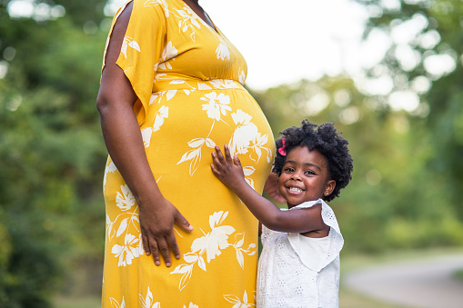
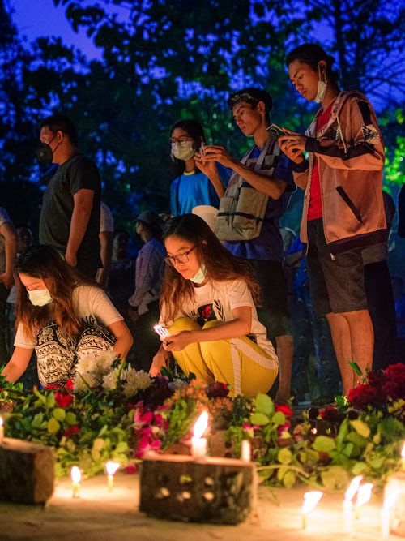
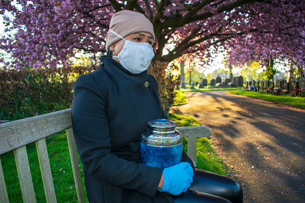
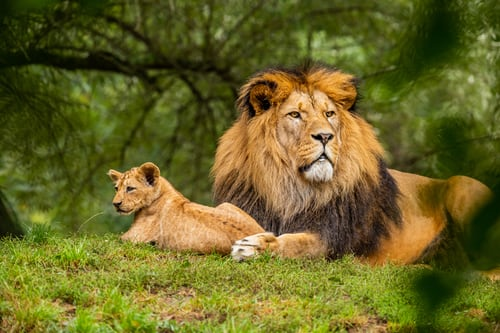
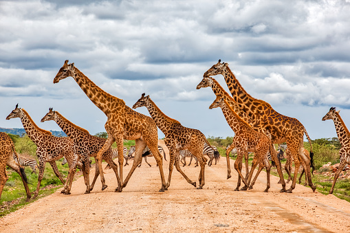
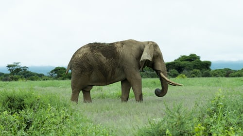

- Family Album
- Weddings
- Graduation
- Pregnancy Shoots 
- Special Occassions
- Funerals  
- Nature Album
- Sunsets
- Oceans
- Sunrise
- The woods
- Animals Album
- Pets
- Jungle kings   
For this album, I have included the following pics;


This has a collection of photos depicting different times/seasons to portry the beauty of our natural environment. It has;


The animal album has two classes;